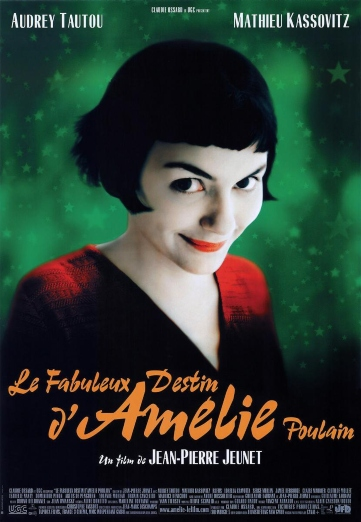
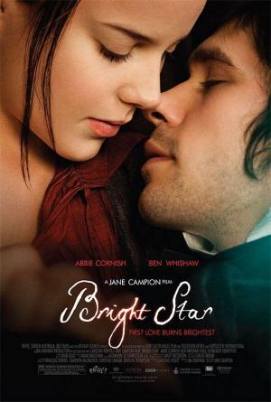
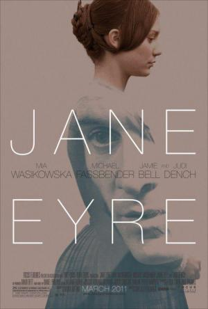
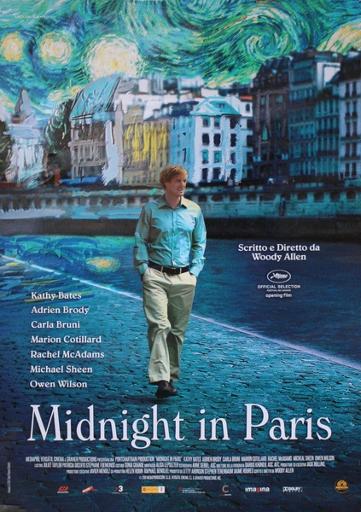
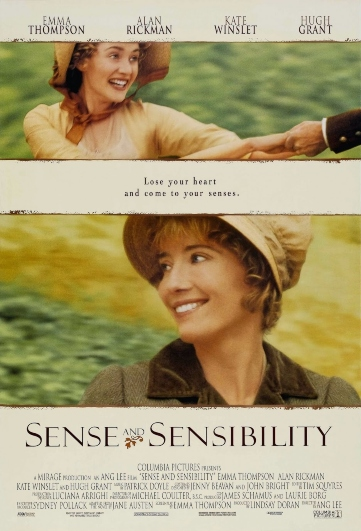

Amelie
Amélie (Le fabuleux destin d'Amélie Poulain en francés, literalmente: «El fabuloso destino de Amélie Poulain») es una comedia romántica francesa de 2001 dirigida por Jean-Pierre Jeunet, el guion fue escrito por Jeunet con la colaboración del novelista Guillaume Laurant en los diálogos, fue protagonizada por Audrey Tautou como Amélie.
Comprar
Atonement
Atonement (conocida como Expiación en España y Expiación, deseo y pecado en Hispanoamérica) es el título de una película británica de 2007, dirigida por Joe Wright y protagonizada por James McAvoy y Keira Knightley. Está basada en la novela homónima escrita por el inglés Ian McEwan.
Comprar

Bright Star
Bright Star es una película de 2009 escrita y dirigida por Jane Campion, basada en los últimos tres años del poeta británico John Keats. La protagonizan Ben Whishaw como Keats, y Abbie Cornish como su musa Fanny Brawne. La película se estrenó el 15 de mayo de 2009 en el marco de Festival de Cannes de 2009.
Comprar
Emma
Emma es una película del año 1996 dirigida por Douglas McGrath, y basada en la novela homónima de Jane Austen. Fue protagonizada por Gwyneth Paltrow, Jeremy Northam, Toni Collette, y Ewan McGregor.
Comprar

Jane Eyre
Jane Eyre es una película británica de 2011 dirigida por Cary Fukunaga y protagonizada por Mia Wasikowska y Michael Fassbender. El guion fue escrito por Moire Buffini basado en la novela homónima de Charlotte Brontë. La película recibó reseñas generalmente positivas.
Comprar
Far from the madding crowd
Far from the Madding Crowd es una adaptación cinematográfica de la novela homónima de Thomas Hardy. Al mismo tiempo que es un remake de la versión de 1967. Fue dirigida por Thomas Vinterberg y está protagonizada por Carey Mulligan, Matthias Schoenaerts, Michael Sheen, Tom Sturridge y Juno Temple.
Comprar
Shakespeare in love
Shakespeare in Love (Shakespeare enamorado, en España; Shakespeare apasionado, en Hispanoamérica) es una película estadounidense de 1998, dirigida por el británico John Madden y protagonizada por Gwyneth Paltrow y Joseph Fiennes. Narra la aventura amorosa entre Viola de Lesseps y un joven William Shakespeare durante la época en la que el dramaturgo estaba escribiendo Romeo y Julieta. Aunque los personajes están basados en personas reales, lo que se cuenta en la película es en su mayor parte ficticio.
Comprar
Becoming Jane
Becoming Jane (La joven Jane Austen en España, Amor verdadero en Hispanoamérica) es una película biográfica histórica británica-irlandesa de 2007 dirigida por Julian Jarrold.
Inspirada en la vida de la famosa escritora británica Jane Austen y su posible relación con Thomas Lefroy, la película se basa en acontecimientos reales que fueron recogidos en el libro Becoming Jane Austen de Jon Spence, que fue el asesor histórico del filme. De hecho, ya antes que Spence, otros biógrafos como Radovici (1995) Tomalin (2000) también habían defendido una relación entre Jane Austen y Thomas Lefroy.
Comprar

Midnight in Paris
Midnight in Paris (en Hispanoamérica, Medianoche en París) es una comedia cinematográfica estadounidense de 2011 ganadora del Óscar al mejor guion original, escrita y dirigida por Woody Allen, que se presentó en la apertura del Festival de Cannes de 2011. La película ha sido la más taquillera de Allen en los Estados Unidos.
Comprar
Pride and Prejudice
Orgullo y prejuicio (Pride and Prejudice) es una película británica del año 2005 del género romántico basada en la novela homónima de Jane Austen publicada en 1813. La película, basada en un guion de Deborah Moggach, fue producida por Working Title Films y dirigida por Joe Wright. En 2006 se lanzó una versión "Rogue Cut" que contiene un final extendido y escenas inéditas. La música estuvo a cargo de Dario Marianelli y en piano estuvo a cargo de Jean-Yves Thibaudet.
Comprar

Sense and Sensibility
Sense and Sensibility (Sentido y sensibilidad en España y Sensatez y sentimientos en Latinoamérica) es una película de 1995 basada en la novela homónima de Jane Austen, con guion de la actriz principal, Emma Thompson, y dirigida por Ang Lee.
Comprar
Suite Française
Suite Française is a 2015 British-French-Belgian romantic World War II drama film directed by Saul Dibb and co-written with Matt Charman. It is based on the second part of Irène Némirovsky's 2004 novel of the same name. The film stars Michelle Williams, Kristin Scott Thomas, Matthias Schoenaerts, Sam Riley, Ruth Wilson, Lambert Wilson and Margot Robbie. It concerns a romance between a French villager and a German soldier during the early years of the German occupation of France. Suite Française was filmed on location in France and Belgium. It was released theatrically in the UK on 13 March 2015 and premiered in the US through Lifetime cable network on 22 May 2017.
Comprar